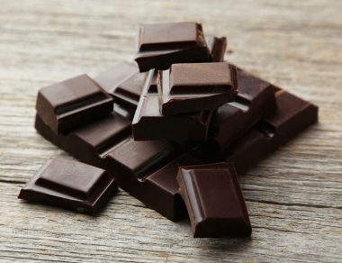
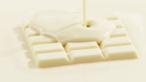
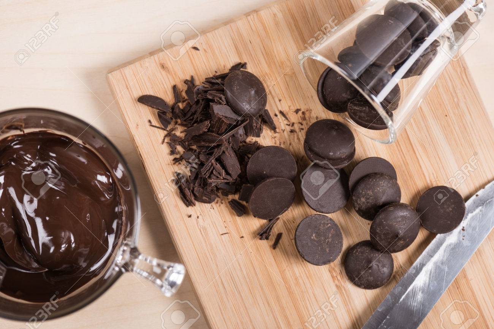

DIFFERENT TYPES OF CHOCOLATE
DARK CHOCOLATE
- Dark chocolate contains cocoa butter, sugar, and chocolate liquor. This type of chocolate can range in cocoa percentages.
- A higher percentage of cocoa indicates that the chocolate will be more pure and likely less sweet.

WHITE CHOCOLATE
- This type of chocolate contains only the fatty part -- the cocoa butter -- as well as milk and sugar.
- Some of our favorite white chocolate truffles include our Lemon Truffle and Lemon Raspberry Truffle .
- because white chocolate goes really well with nice fruity or citrus flavors!

COUVERTURE CHOCOLATE
- Couverture chocolate is the type of chocolate that is used for truffles.
- Couverture chocolate is made with the best cocoa beans and a high percentage of cocoa.
- When you melt this type of chocolate, you get a smooth consistency that is perfect for molding and making confectionery treats!

WEBSITES TO BUY CHOCOLATES ONLINE
link1
Link2
Link3